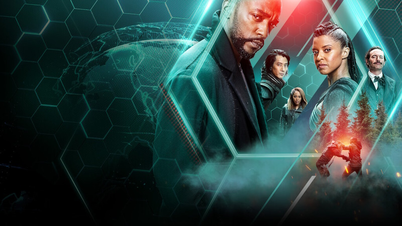
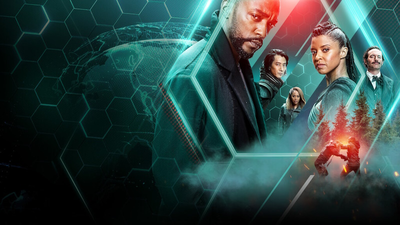

About Me
Hello. I'm Saliha. I'm 21 years old. I live in Bursa, the green city of Turkey. I have 2 very cute cats. I love spending time with them. Learning, reading, creating, philosophy, watching documentaries, and spending time in nature give me life energy.
My Interests
-
Favorite TV Shows
-
Altered Carbon

Altered Carbon is set in a future where consciousness is digitized and stored in cortical stacks implanted in the spine, allowing humans to survive physical death by having their memories and consciousness "re-sleeved" into new bodies.
- The mentalist
- Mr. Robot
- Snowpiercer
-
Altered Carbon

- Favorite Movies
-
Peekay

- Who am i
- Baby driver
- 3 Idiots
-
Peekay
- Favorite Documentaries
- Earthlings
- What the health
- Seven Worlds One Planet
- Favorite Books
-
The Picture of Dorian Gray

- Amak-ı Hayal
- Veronika Decides to Die
- Ward No 6
- Mastery - Robert Greene
-
The Picture of Dorian Gray
My Software Journey
I met software when I was 14 years old. I was very interested in websites at that time. I started researching how to create them. I took my first step into the world of software by creating a ready-made website with wix.com. Since then, whenever I have the opportunity, I work hard and develop myself in different areas of software. Every day, I realize how little I actually know and am amazed. I'm still aware that I'm at the beginning of the road. And I continue this learning process.
I started computer programming at Eskisehir Technical University. I left university in my first year for some reasons. Currently, I continue my education journey with online courses and bootcamps without interruption. I also develop games on Google Play. I have published some small-scale games. I also benefit from courses and trainings prepared by Google. I also have a website called Unforgettable Gifts Shop. On this site, I take orders for personalized surprise web pages and design them.
Languages and Tools I Use
Languages
- Html
- Css
- Java
- C#
- Python (basic level)
- SQL (basic level)
Tools
- Visual Studio
- Unity
- Android Studio
- Adobe Photoshop (basic level)
- Adobe Illustrator (basic level)
- Blender (basic level)
Contact
You can contact me at salihakotan77@gmail.com.